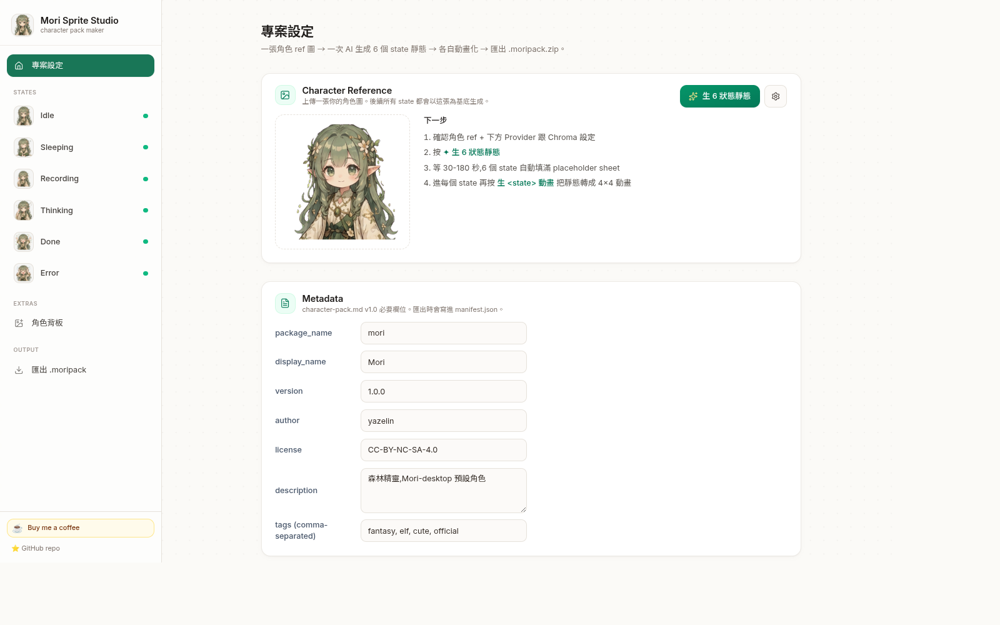
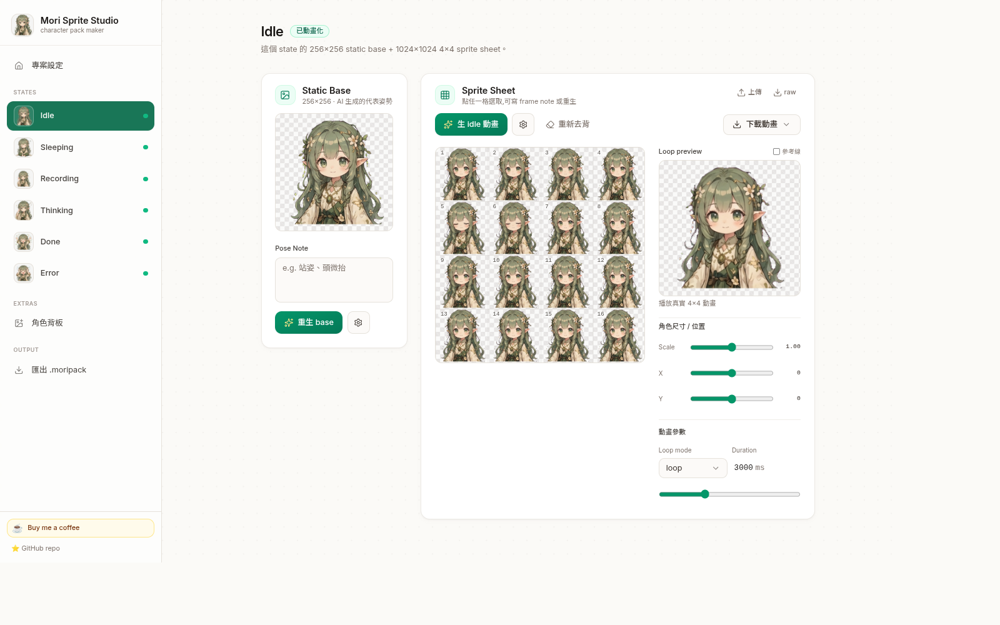
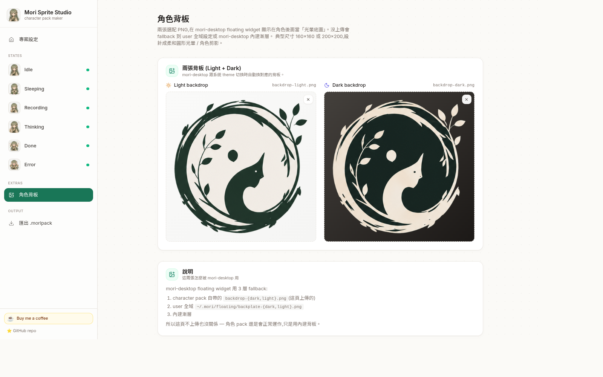
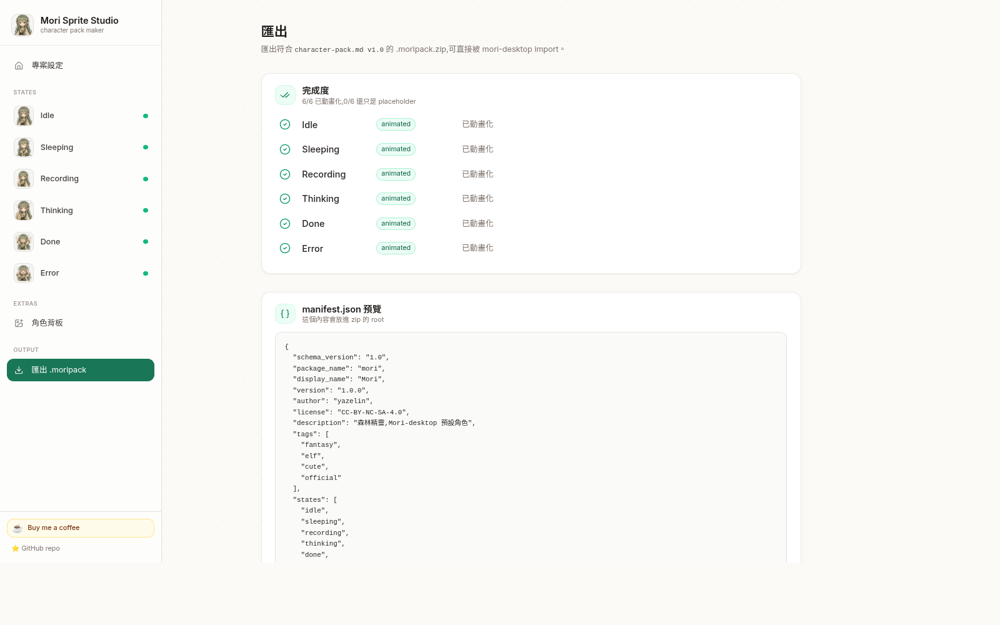

Mori Sprite Studio
從一張角色 ref 圖,一鍵生成 1024×1024 的 4×4 sprite 動畫包。 AI 驅動。純瀏覽器。透明背景。多種匯出格式。
↑ 真實 sprite-sheet 用 CSS steps() 播放中 — 跟 mori-desktop 用的同一套技術。看下方有沒有看到 Mori 走過去 🍃
這個工具做什麼
給它一張你的角色 ref 圖,它幫你生出完整給 mori-desktop 用的 sprite 動畫包 — 6 個必要 + 2 個可選 state,每個都是 1024×1024 的 4×4 sprite sheet,mori-desktop 浮動視窗會播放。
- 必要 6 個:idle(站著)/ sleeping(睡覺)/ recording(聽)/ thinking(思考)/ done(完成歡呼)/ error(出包慌張)
- 可選 2 個:walking(走路)/ dragging(被滑鼠拎起來)— 循環運動類,走獨立的 W/Dr pipeline
這個專案是為 Mori 而生 — yazelin 的森林精靈 Jarvis-style AI 夥伴,住在桌面上。「Iron Man 有 Jarvis,我有 Mori。」這個 studio 做的就是 Mori 的可見身體 — 她的 sprite 形態,mori-desktop 浮動視窗會把她動畫化。
當然這工具也適合任何你想給「可見身體」的角色:你自己的 AI 夥伴 / 個人精靈 / 直播 overlay / 角色 mascot 都可以。Mori demo 只是一個範例。
也可以單獨把每個 state 匯出成 APNG / GIF / WebM / 原始 sheet PNG — 用在 LINE 動態貼圖、Discord、OBS overlay、影片剪輯等等。

工作流程
- 上傳角色 ref — 任何 PNG / JPG,任何背景都行。
- 生 6 個靜態 — 一次 AI call 出 3×2 grid,自動切成 6 個 state pose。
- 每 state 生動畫(必要 6 個) — 用 pre-tile placeholder + 多 anchor identity ref,把角色位置鎖住,只加微擾(眨眼、呼吸、小手勢)。
- 可選的 walking + dragging — 走獨立 W/Dr pipeline(不 pre-tile,因為步行循環需要每格都不同 pose)。「反向順序」+「換位模式」buttons 讓你手動排序到走路看起來對為止。
- 細調 — 每格獨立重生、loop 設定、跨 state normalize 尺寸、scale / offset sliders。
- 角色背板(可選)— 上傳 Light + Dark 兩張背板。用桌面預覽分頁看所有 state 疊在背板上的樣子,可切 shape / theme。
- 匯出
.moripack.zip給 mori-desktop,或每 state 單獨匯出 APNG / GIF / WebM 給其他平台。

功能
4 個 AI provider
Author Fallback(免設定預設)、Codex-Image(用你 ChatGPT Plus 額度)、Vertex Gemini、Google Gemini Direct。
防抖動
Pre-tile placeholder sheet 當 AI ref,鎖住角色 16 格內位置不會飄。
防角色 drift
多 anchor identity ref — 其他 state 的 staticBase 都當 outfit anchor 一起送給 AI,衣服 / 髮型不會亂變。
Walking + Dragging 獨立 pipeline
W / Dr template 不走 pre-tile。AI 從 character ref + neutral 全身站姿自由設計 16 格,template 內含逐格 gait 結構。
↺ 反向順序
一鍵反向 16 cells。救「動畫看起來在後退」的情況。
✥ 換位模式
點 cell A → 點 cell B → 兩格內容互換。手動排到走路看起來對為止。
桌面預覽分頁
8 個 state 同時排成 floating widget mockup,可切 shape(圓 / 圓角 / 方)× backplate(顯示 / 關閉)× App theme × OS theme。跟 mori-desktop 真實 render 1:1 對應。
身體結構無關 prompt
人形 / 植物 / 機器人 / 史萊姆 / 寶石都能用。Semantic 描述抽象 motion,不綁定 anatomy。
One-shot 兩種 pattern
BURST-AND-SETTLE(歡呼)vs SUSTAINED-ENERGY(慌張)— 自動依 state semantic 選對的。
每格獨立重生
點任一 frame → 只重生那格,用前後 frame + static base 當 context smooth 過渡。
Chroma + 邊緣 erosion
綠或洋紅,3 級 tolerance,0-10 px erosion。「重新去背」從原始 raw 重跑,非破壞性,erosion 可上下調。
跨 state Normalize
一鍵掃描每 state 的角色 bbox,算出 per-state transform(scale + offset),讓 mori-desktop 切 state 時不跳。
多種匯出格式
.moripack.zip / APNG / GIF / WebM(VP9 + alpha)/ 原始 sheet / .moriproject.zip 存讀檔。
角色背板
Light + Dark 兩張背板 PNG 一起打包,跟 mori-desktop PR #107 的 3-tier backplate chain 對應。
持久 Quota counter
Sidebar 倒數 50→0 Author-Fallback 剩餘呼叫。用 Vercel KV(Upstash Redis)持久化 — Vercel function cold start 不會 reset。
Demo loader
一鍵載入完整 27 MB Mori demo,新 visitor 馬上就能看全套運作。

檔案格式
| 格式 | 用途 | 哪裡能播 |
|---|---|---|
.moripack.zip | Consumer 格式 — 拖進 mori-desktop characters 資料夾 | mori-desktop 浮動視窗 |
.moriproject.zip | Author 格式 — 之後可載回繼續編輯 | 本 studio(「載入」按鈕) |
| APNG (.png) | 透明 + 循環。LINE 動態貼圖、Discord、Slack、Twitter inline | 瀏覽器 + LINE + Discord |
| GIF (.gif) | 相容性最廣。1-bit alpha 所以邊緣稍粗 | Mac Preview、Windows Photos、什麼都行 |
| WebM (.webm) | VP9 + alpha。OBS 串流 overlay、QuickTime | 瀏覽器、OBS、影片剪輯 |
| 原始 sheet (.png) | 1024×1024 4×4 sheet 本身 | Photoshop / 外部編輯 |

快速上手
用線上 app
- 開 mori-sprite-studio.vercel.app
- 專案頁點
✦ 載入 Mori 預設範本(一鍵載入完整 Mori 角色包 — 27 MB) - 到處逛逛看怎麼跑
- 要做自己的:清資料(或開 incognito),上傳你的角色 ref,點
生 6 狀態靜態→ 每 state 點生動畫
Author Fallback 用 yazelin 自己的 API key — 免設定。我自掏腰包暫時開放給大家試用。⚠ 每 IP 上限 50 次/day + 同時 1 張,**用 Vercel KV 持久化**所以真的會扣(Vercel cold start 不會 reset)。Sidebar 底部有倒數 counter。錢花完就會關掉 — 不是長期承諾,只是讓陌生人也能試一下。想讓它繼續開著,請 ☕ 補點咖啡錢。
自架
git clone https://github.com/yazelin/mori-sprite-studio
cd mori-sprite-studio
npm install
npm run dev # Vite dev server
# 或
npm run dev:vercel # vercel dev — 測 /api/generate Author Fallback proxy 用
本機跑 Author Fallback 在 .env.local 設:
AUTHOR_FALLBACK_PROVIDER=vertex-gemini
AUTHOR_API_KEY=AQ.AAAA... # Vertex AI Express key 開頭是 AQ
AUTHOR_MODEL=gemini-3-pro-image-preview
AUTHOR_IMAGE_SIZE=1K
# 可選 — 持久 rate limit(用 Vercel KV integration 接 Upstash Redis)
KV_REST_API_URL=...
KV_REST_API_TOKEN=...架構
| Layer | Tech |
|---|---|
| UI | Vite + React 19 + TypeScript + Tailwind CSS + shadcn/ui |
| State | Zustand + IndexedDB(idb-keyval)Blob 原生持久化 |
| AI providers | 抽象 ImageProvider 介面 + 4 個實作 |
| 動畫 pipeline | C template(pre-tile,idle 類)+ W/Dr template(獨立,gait/swing 類) |
| Chroma key | 2-pass per-channel dominance + despill + 邊緣 erosion |
| Cell 操作 | Canvas 為基底的 reorder / swap / reverse(imageOps.ts) |
| 動畫預覽 | Canvas + requestAnimationFrame(16-frame row-major) |
| 匯出 encoder | upng-js(APNG)、gifenc(GIF)、MediaRecorder + VP9(WebM)、JSZip |
| Server-side | Vercel Function /api/generate — Author Fallback proxy + KV-backed rate limit(Upstash Redis,fallback in-memory) |
輸出規格:1024×1024 PNG-32,4×4 grid,每格 256×256,row-major frame order,透明背景。對應 mori-desktop 的 character-pack.md v1.0。
用愛跟咖啡跑著的 ☕
這是個人 passion project。如果你覺得實用,可以:
自掏腰包做的。咖啡錢直接拿去:Author Fallback 的 API quota(讓新人不會剛來就沒得抽)、Vercel / domain 開銷、time + caffeine 繼續寫。
相關專案
- mori-desktop — 森林精靈 Mori 的桌面身體。yazelin 的 Jarvis-style AI 夥伴。Rust + Tauri 2 + Whisper(耳)+ LLM(腦)。這個 studio 做她的可見 sprite 形態。
- world-tree — Mori 的源頭 / 世界樹。Mori 來自的地方。
- codex-image-service — 自架 ChatGPT Plus/Pro quota 當 image-gen API(其中一個 provider 接它)
- line-sticker-studio — 姐妹專案,LINE 貼圖製作(共用一些 prompt engineering pattern)
- emoji-slot-machine — 姐妹專案,3×3 emoji 拉霸生成器(共用一些 sprite-sheet 動畫 pattern)